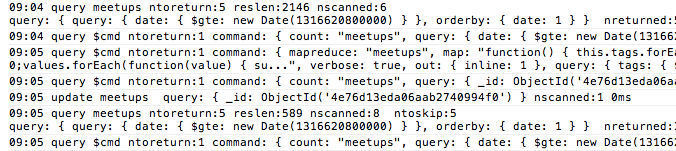

About MongoSpy
MongoSpy let's you keep an eye on MongoDB activity from your browser's console. It runs as a lightweight node.js socket.io-powered application which monitors the system.profile collection of your database. When developing, simply start up the server, include a javascript file in your layout, and watch it go.
Installation
Installation is easy. First though, you'll want to install node.js if you haven't already done so.
Step 1 - Set Things Up
» clone the repository and install the dependencies (socket.io and mongodb driver)
git clone git://github.com/karlseguin/mongospy.git cd mongospy npm install
Step 2 - Run The Server
» You might want to edit lib/config.js to change the default port or MongoDB connection information
node app.js DB_NAME_TO_SPY_ON
Step 3 - Include The Script(s)
» If you're already including jQuery, you can skip the first line
<script type="text/javascript" src="http://127.0.0.1:27117/socket.io/socket.io.js"></script> <script type="text/javascript" src="http://127.0.0.1:27117/"></script>
Step 4 - Look at your console
Notes
Do not run this in production